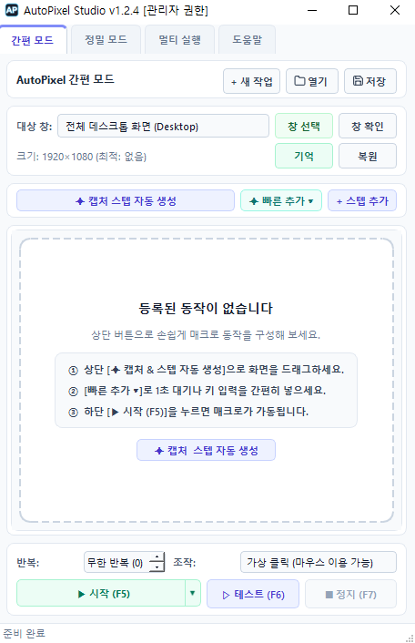
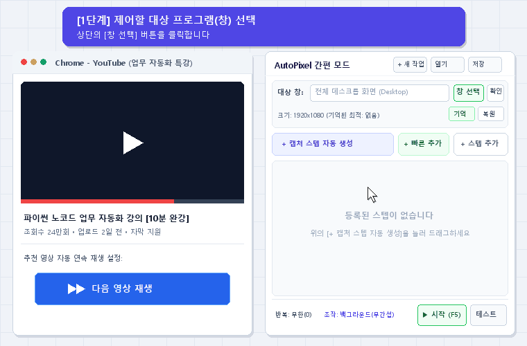
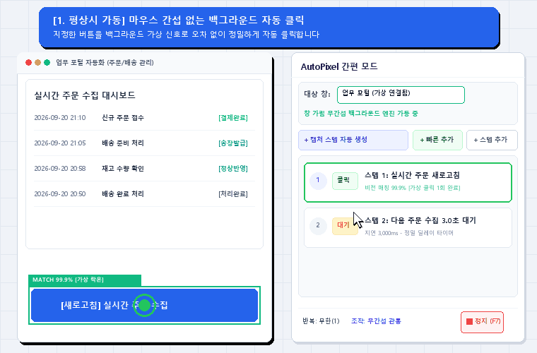

마우스 커서를 빼앗기지 않아 매크로를 켜둔 채로 다른 PC 작업이 가능합니다.
원하는 버튼을 캡처해두면 오차 없이 스스로 찾아 정확하게 제어합니다.

복잡한 프로그래밍 지식 없이 마우스 조작 몇 번으로 바로 실행합니다.
자동화를 실행할 프로그램이나 웹 브라우저 창을 마우스로 클릭하여 지정합니다.
클릭할 버튼이나 아이콘을 마우스로 드래그하여 캡처하고 클릭 동작을 설정합니다.
단축키 F5를 누르면 마우스 커서 간섭 없이 백그라운드에서 스스로 작업을 수행합니다.

단순 마우스 좌표 반복기를 넘어, 사용자 작업을 방해하지 않는 차세대 스마트 자동화입니다.
| 비교 항목 | 기존 일반 매크로 툴 | AutoPixel Studio |
|---|---|---|
| 마우스 조작 방식 |
✕물리 마우스 강탈 매크로 실행 중 PC 마우스를 쓸 수 없어 딴짓 불가 |
✓가상 클릭 (마우스 이용 가능) 매크로 켜두고 내 마우스로 웹서핑·문서 작업 가능 |
| 창 가림 대응 |
✕화면 가려지면 실패 작업 창 위에 다른 창이 조금만 덮여도 멈춤·오작동 |
✓창 가림 100% 완벽 지원 작업 창 뒤에 브라우저를 덮어두어도 백그라운드 구동 |
| 창 위치 이동 대응 |
✕창 이동 시 허공 클릭 (오작동) 창 위치가 바뀌면 옛날 좌표를 허공 클릭하여 바로 꼬임 |
✓실시간 비전 락온 & 자동 추적 창을 화면 어디로 옮겨도 버튼을 끝까지 따라붙어 100% 적중 |
| 창 크기 & 해상도 변화 |
✕크기 변경 시 영구 오작동 해상도가 틀어지면 스크립트 전체를 재작성해야 함 |
✓원클릭 해상도 기억 & 크기 복원 제작 당시의 가로x세로 최적 크기를 1초 만에 강제 원상 복구 |
| 제작 난이도 |
✕난해한 스크립트 & 코딩 좌표 계산, if 조건문 등 복잡한 문법 학습 필요 |
✓화면 드래그 캡처 (100% 노코드) 원하는 버튼만 마우스로 캡처하면 손쉽게 완성 |
| 설치 & 실행 환경 |
✕무거운 설치 & 의존성 오류 복잡한 인스톨러, 환경 설정 오류 빈발 |
✓무설치 단일 포터블 (.exe) 설치 과정 없이 단일 실행 파일로 즉시 구동 |

더 스마트하고 안정적인 자동화 환경을 위해 설계되었습니다.
물리 마우스 커서를 제어하지 않는 가상 입력 방식을 지원합니다. 매크로가 실행되는 동안에도 자유롭게 웹서핑, 문서 작업, 영상 감상이 가능합니다.
고성능 템플릿 매칭 알고리즘을 탑재하여 화면 위치가 바뀌거나 창 크기가 조절되어도 대상을 빠르고 정확하게 찾아냅니다.
자주 쓰는 기능을 컴팩트하게 모아둔 미니멀 간편 모드와, 정밀 시퀀스 흐름을 설계할 수 있는 스튜디오 모드를 자유롭게 전환하며 사용할 수 있습니다.
복잡한 인스톨러 설치나 의존성 설정 없이, 단 하나의 실행 파일(.exe)로 어디서든 가볍고 신속하게 실행됩니다.
궁금하신 점을 빠르게 확인해 보세요.